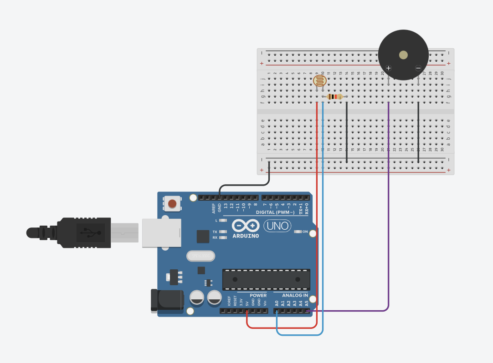
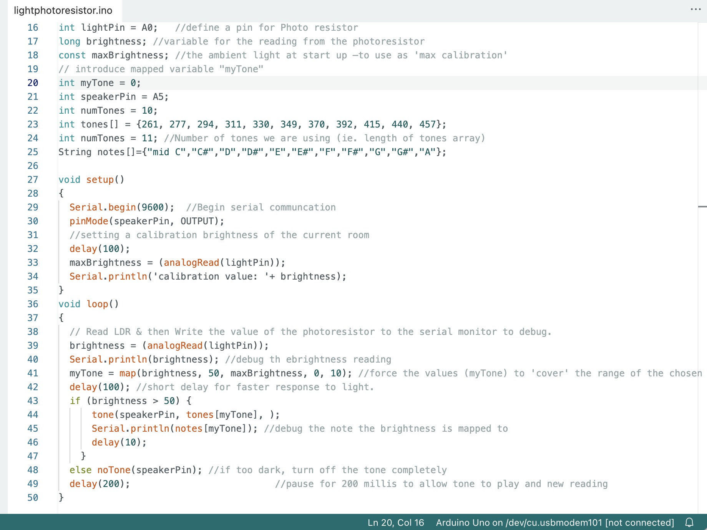
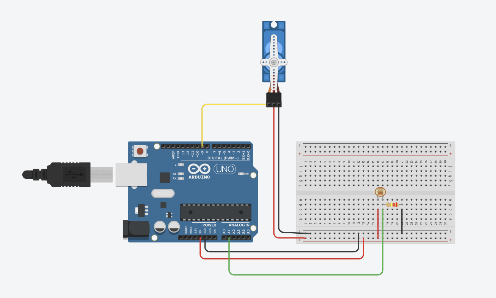
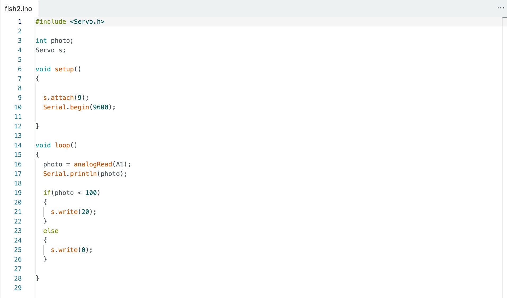
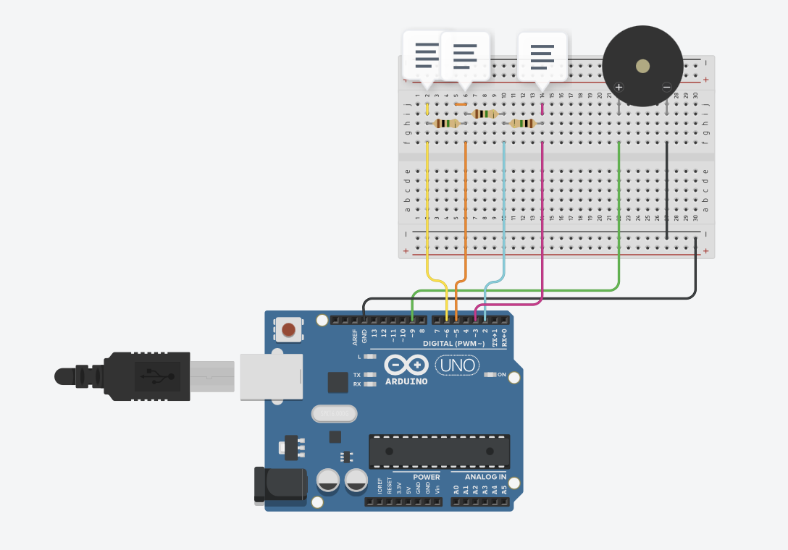
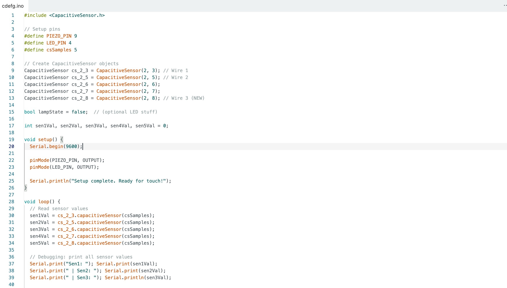
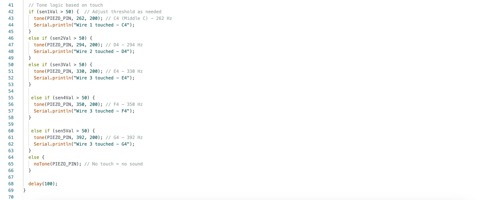

<week eight reflection> <p> In Week Eight we were totallyy dominating the Arduino. Things are starting to make sense and I actually understand how a circuit works now. It feels super liberating to actually be able to make something happen out of just wires and sensors. How empowering to understand something I thought I would never be able to! What's that saying? If you want to be good at something, first you've got to be bad. Preach. </p>
<activities>
<h3> ugh what is that annoying sound???! </h3> <p> In this circuit we used a photoresistor to control a passive buzzer based on how much light the sensor was detecting. Using the photoresistor, the Arduino would constantly read the brightness in the room, and if the value passed a certain threshold, it played a super annoying tone. If it was too dark, the buzzer would stay silent. Like ugh thank god it was sooo loud. This taught me how to use map() to translate sensor values into some sort of output!!
</p> <video> </video> <image>

</image> <image>

</image> <h3> fishy why are you sleeping </h3> <p> Okay in this circuit we used the photoresistor to control a servo motor. The motor was programmed to move whenever the light dropped below a certain threshold. The photoresistor was wired to the Arduino and we used analogRead()to measure the light levels. When it got dark enough, the servo rotated a certain degree. We experimented with a bunch of different degrees and it was super cool to watch it move. It also looks like a cute little fish which I adore! This was a super great way to learn how to use sensor input to control motion and make objects feel responsive or alive. </p> <video> </video> <image>

</image> <image>

</image> <h3> mary had a little lamb </h3> <p> Okay this circuit was sooo cool. We used wires to act as capacitive sensors and detect when a person touched them. Each wire was assigned a different frequency which played through the buzzer when you touched the wire. The CapacitiveSensor library helped us measure the changes in electrical charge when human skin came near the sensors. Because me and meg are so musically talented we decided to perform "mary had a little lamb". This activity was super interesting and showed us how simple interactions, such as touch, can create an cool output. Being able to create an electrical piano is totally easier then I thought it would be. </p> <video> </video> <h3> cdefg piano </h3> <p> Because me and meg were super ambitious and smart we decided to include other additional notes to our electric piano. We added more wires and resistors and adjusted the Arduino code to include the notes F and G. We searched up the frequencies for F and G and then created new if statements to assign these wires to these frequencies. </p> <video> </video> <image>

</image> <image>

</image> <image>

</image>
<research>
<h3> Live Pelt by Kelly Heaton </h3> <p> In Live Pelt, Kelly Heaton created an analog circuit covered in faux fur that responds to stroking by emitting purring sounds. This was her attempt to mimick a living, emotional creature. Her work explores animal behaviour and emotional feedback. Through this project, it made me wonder the possibilities of what an "output" could be. It goes beyond just light or sound, but attempts to replicate warmth and comfort. I find it so interesting to see how often people will turn physical computations into real, human things and feelings. The idea of converting a circuit into a creature that responds to touch is super intriguing. It helps consolidate the concepts of connecting sensors into certain responses and outputs. The concept of converting human senses into human responses through a physical computation is a super insightful inspiration for further ideas and final projects. </p> <image src = "https://www.kellyheatonstudio.com/live-pelt"> </image> <h3> Hacking the Body by Kate Sicchio and Camille Baker </h3> <p> Hacking the Body is a collaborative project by Kate Sicchio and Camille Baker that explores how biosignals, like breath, heartbeat, and muscle tension, can be turned into creative outputs using wearable sensors. They use tools like the Arduino, wearable circuits, and custom software to create systems that map the internal states of the performer’s body to external outputs. These outputs included generative visuals, reactive music, or choreographed motion, all determined by the performer’s physiological responses. Their work blends performance, physical computing, and feminist technology. They treat the body as a responsive system rather than something to be measured or corrected. Their project was really intriguing to me in the way they transformed data collection into a form of expression. Being able to compute a body's physiological response and change that into an interactive and immersive experience was really interesting. It highlights how we can communicate bodily figures into a computation and vice cersa. </p> <image src = "https://www.sicchio.com/work-1/hacking-the-body"> </image>
</body>
</html>